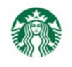
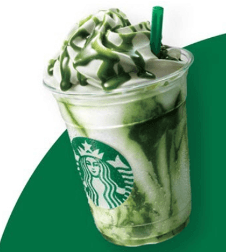
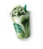
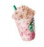
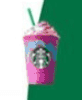

Tadýna doyamayacaðýnýz Starbuck külahlarý. Hijyenik plastik bardaklarda dondurmaiar, kaymaklý aþureler, milk-shake'ler, neskafeler, buzlu meþrubatlar, hatta soðuk lipton-çay ve sýcak köpüklü türk-kahvesi bile. Külahlarýn yanýsýra isterseniz simit ve peynir de alabilirsiniz.
daha Fazlasý


